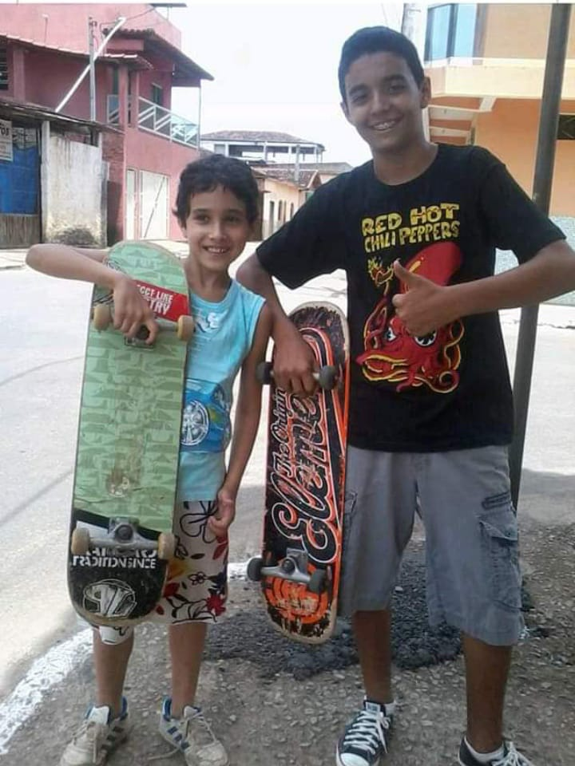

-
A prática de exercícios na academia é uma das minhas grandes paixões. A cada conquista e progresso que alcanço, sinto uma motivação renovada para explorar novos desafios. A academia se tornou um espaço sagrado onde dedico tempo para me focar em mim mesmo, melhorando minha resistência, força e condicionamento físico. Essa dedicação impacta positivamente em todas as áreas da minha vida, impulsionando minha confiança e proporcionando uma sensação de realização pessoal.
Irei alcançar os 40cm de braço até o fim do ano! -
Recentemente, adotei o hábito de acordar cedo e seguir as práticas recomendadas no livro "O Milagre do Amanhã". Essa leitura despertou em mim a importância de aproveitar as primeiras horas do dia para cuidar de mim mesmo e investir em meu autodesenvolvimento. Ao implementar essas práticas em minha rotina matinal, pude experimentar uma transformação significativa em minha mentalidade e produtividade. Além disso, esse tempo dedicado a mim mesmo complementa perfeitamente o hábito que estabeleci de dar continuidade ao curso que estou fazendo e ler livros de autodesenvolvimento.

-
A música é uma parte fundamental da minha vida. Não tenho um estilo musical favorito, pois gosto de explorar diferentes gêneros e artistas. A música me acompanha em todos os momentos, seja no trabalho, nos exercícios físicos ou apenas para relaxar. Ela tem o poder de me transportar para diferentes emoções e me fazer sentir vivo. É uma forma de expressão que transcende as barreiras culturais e me conecta com outras pessoas ao redor do mundo. Não importa o meu estado de espírito, sempre encontro uma música que combina com o momento. É uma fonte constante de inspiração e alegria na minha vida.
-
Quando criança, descobri minha paixão pelo skate. Era uma atividade que me trazia muita diversão e liberdade. Infelizmente, acabei perdendo o contato com o skate ao longo dos anos devido à falta de acesso a um. No entanto, guardo as memórias e a empolgação daquela época, e sempre que vejo alguém andando de skate, sinto uma nostalgia gostosa. Quem sabe um dia eu possa retomar essa atividade e reencontrar a sensação de liberdade que o skate me proporcionava.
 -
Sou um entusiasta dos video games e eles fazem parte da minha vida desde muito cedo. Dentre todos os jogos, os da From Software têm um lugar especial no meu coração. O Bloodborne, em particular, é um dos meus favoritos. Os video games são uma forma de me divertir, relaxar e até mesmo explorar histórias cativantes, como é o caso dos jogos da From Software. Atualmente ando deixando os jogos de lado, embora eu goste muito de jogar, consome muito tempo do dia, em vez disso, utilizo o tempo para focar em mim.